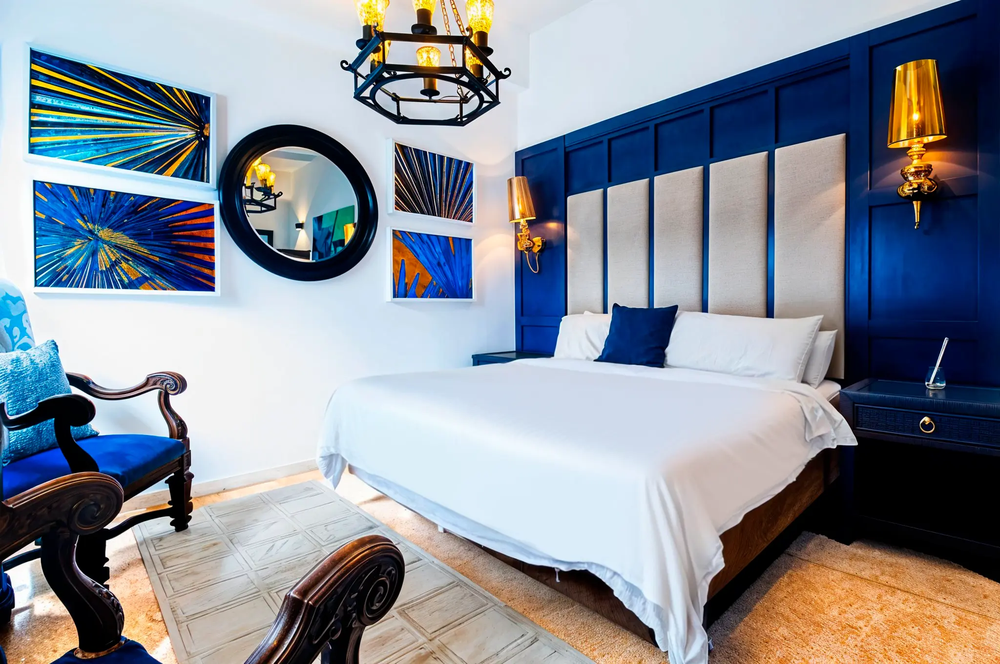

Información Útil
Preguntas Frecuentes
Todo lo que los huéspedes preguntan antes de reservar en Ocean Park.
 Hotel · Ocean Park
Hotel · Ocean Park

Todo lo que los huéspedes preguntan antes de reservar en Ocean Park.
En el 5 Calle Guerrero Noble en Ocean Park, San Juan, Puerto Rico 00913. El hotel está frente al mar, a pasos de la playa de Ocean Park y a minutos de Condado y el Viejo San Juan.
El Aeropuerto Internacional Luis Muñoz Marín (SJU) está a unos 15 minutos en auto. Nuestro concierge puede coordinar traslados privados de llegada y salida.
Ocean Park es un vecindario tranquilo y mayormente residencial frente al mar, entre Condado e Isla Verde. Tiene una de las playas más amplias y hermosas de San Juan, un ambiente relajado, cafés cercanos y es uno de los puntos de kitesurf más conocidos de Puerto Rico.
Sí. Villa Azure Hotel ofrece estacionamiento gratuito para los huéspedes, lo que facilita llegadas y salidas.
Dieciséis suites de diseño con baño privado, en configuraciones king y queen, con capacidad para hasta 38 huéspedes en total. Reserva una sola suite o el hotel completo para tu grupo.
Sí. El hotel está frente al mar en Ocean Park con acceso directo a la playa, a pasos de la arena.
Muchas de las dieciséis suites tienen vista al mar, y todos los huéspedes disfrutan del entorno frente a la playa, las dos piscinas y las terrazas compartidas. Los detalles de cada suite están en la página de Suites.
Sí, dos piscinas privadas: una piscina principal y una piscina tranquila con terraza de sol, ambas rodeadas de jardines tropicales.
Sí. El WiFi rápido es gratuito en todo el hotel, incluyendo las suites, las piscinas y las áreas comunes.
No, no se permiten mascotas en el hotel.
El check-in es a las 4:00 pm y el check-out a las 10:00 am. Si tus vuelos requieren flexibilidad, contáctanos y haremos lo posible por acomodarte.
Reserva directamente en nuestro motor de reservas o por WhatsApp. Las reservas directas no tienen cargos de OTA, así que la mejor tarifa disponible siempre está en nuestro propio sitio.
Sí. El buyout completo de las dieciséis suites está disponible para bodas, retiros y celebraciones de grupo: la propiedad entera, reservada como una sola, para tu grupo.
Las tarifas y condiciones de cancelación se muestran al finalizar la reserva en nuestro motor, antes de confirmar. Para estancias de grupo y eventos, nuestro equipo puede explicarte las opciones por email o WhatsApp.
Sí. Nuestro chef privado interno puede preparar desde desayunos junto a la piscina hasta cenas de varios tiempos frente al mar. El servicio puede coordinarse para suites individuales, grupos o buyouts completos.
Tours, charters en bote, traslados al aeropuerto, tratamientos de spa y masajes en la suite, sesiones privadas de yoga e itinerarios a la medida por San Juan y la isla.
Sí. La playa de Ocean Park, justo frente al hotel, es uno de los puntos de kitesurf más conocidos de Puerto Rico. El concierge puede coordinar clases y equipo con escuelas locales. Conoce más en la página de kitesurf.
Sí. Celebramos bodas frente al mar con jardines para ceremonias, terrazas frente al mar y un comedor costero. Un buyout completo le da a tu grupo las dieciséis suites y uso exclusivo de la propiedad. Visita Bodas.
Sí. Con dieciséis suites, espacios de eventos y comedor, chef interno y un entorno frente al mar a minutos del aeropuerto, el hotel está hecho para retiros, offsites y encuentros de equipo. Visita Corporativo.
Escribe a info@villaazurehotelpr.com, chatea por WhatsApp o usa el formulario en nuestra página de Contacto. Respondemos normalmente dentro de 24 horas, en español o inglés.
Camina el Viejo San Juan y el fuerte El Morro, come y baila en La Placita de Santurce, disfruta días de playa en Ocean Park y haz una excursión al bosque El Yunque. El kitesurf, el snorkel y los charters en bote están muy cerca, y nuestro concierge puede coordinarlo todo.
Kasalta, la legendaria panadería y deli de Ocean Park, está a pasos del hotel, junto con lugares frente al mar como Pamela's y Numero Uno Beach House. A diez minutos, La Placita de Santurce tiene favoritos como Santaella y Jose Enrique, además del parque gastronómico Lote 23. En el Viejo San Juan, Marmalade es ideal para una cena elegante.
La playa de Ocean Park, justo frente al hotel, es una de las más amplias y relajadas de San Juan. Condado e Isla Verde están a minutos, El Escambrón es el punto local de snorkel, y Playa Flamenco en Culebra, considerada entre las mejores del mundo, es una excelente excursión de día.
El bosque El Yunque está a unos 45 minutos al este. Rema en kayak por la bahía bioluminiscente de Fajardo de noche, toma la lancha o un vuelo a Culebra para Playa Flamenco, visita Vieques y Mosquito Bay, o prueba los quioscos de comida de Piñones pasando Isla Verde.
Los ciudadanos de EE. UU. no necesitan pasaporte. Puerto Rico es territorio estadounidense: vuelos domésticos, dólares y planes de celular de EE. UU. funcionan igual que en casa. Los visitantes internacionales siguen los mismos requisitos de entrada que para el territorio continental de EE. UU.
De diciembre a abril es la temporada alta, seca y con brisa. De mayo a noviembre hace más calor, hay menos gente y mejores tarifas, y el mar se puede nadar todo el año con temperaturas de 24 a 30 grados en cualquier mes.
Uber funciona muy bien en San Juan, y Ocean Park es caminable hasta la playa, los cafés y Kasalta. Solo necesitas auto de alquiler para excursiones como El Yunque o Fajardo, y el hotel tiene estacionamiento gratuito.
La Placita de Santurce, a diez minutos, se convierte en la fiesta al aire libre más animada de San Juan de jueves a sábado. Condado tiene lounges y casinos, y el Viejo San Juan mezcla bares históricos con salsa. Ocean Park se mantiene tranquilo de noche, y por eso a los huéspedes les encanta dormir aquí.
Escríbenos cuando quieras y nuestro equipo te responderá con rapidez, normalmente dentro de 24 horas.
Contáctanos